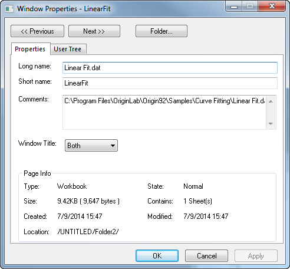

Origin-Benennungsregeln für Unterfenster
ChildWindow-Names
In diesem Thema stellen wir Ihnen das Konzept von Kurznamen und Langnamen vor. Jedes Origin-Unterfenster hat einen einmaligen Namen, der es identifiziert. Fensternamen sind mehr als nur ein Hinweis auf den Fensterinhalt. Sie werden von Origin selbst innerhalb der Benutzeroberfläche, in der Befehlszeile und in Origin C-Programmen sowie LabTalk-Skripts zum teilweisen Identifizieren der zu bearbeitenden Daten verwendet.
Kurznamen von Origin-Unterfenstern
Regeln für Kurznamen von Arbeitsmappen:
- müssen einmalig sein (innerhalb des Projekts)
- dürfen keine Leerzeichen enthalten
- müssen mit einem Buchstaben beginnen
- sind begrenzt auf Zeichen und Zahlen (nicht !,@,#,$,%,^," etc.).
- dürfen nicht mehr als 13 Stellen enthalten.
| Unterfenster |
Standardmäßiger Kurzname |
|
Arbeitsmappe
|
MappeN
|
|
Matrix
|
MMappeN
|
|
Diagramm
|
DiagrammN
|
|
Funktionsdiagramm
|
FunktionN
|
|
Layout
|
LayoutN
|
Langnamen von Origin-Unterfenstern
Regeln für Langnamen von Unterfenstern:
- müssen nicht einmalig sein
- dürfen Leerzeichen enthalten
- können mit einem Buchstaben, einer Zahl oder einem Sonderzeichen beginnen. Bitte beachten Sie, dass spezielle Zeichen wie !,# das Erstellen von LabTalk-Bereichen nach Langnamen, die sich auf dieses Unterfenster beziehen, verhindern können.
- Die Länge ist unbegrenzt.
Beachten Sie, dass es keine standardisierten Langnamen gibt.
Origin-Unterfenster benennen, umbenennen und beschriften
- Um eine Origin-Arbeitsmappe, eine Matrix, ein Diagramm, ein Funktionsdiagramm, ein Layout- oder Notizfenster zu benennen oder zu beschriften, aktivieren Sie das Fenster und wählen Sie Fenster: Eigenschaften.
- oder
- Klicken Sie mit der rechten Maustaste in die Titelzeile des Fensters und wählen Sie im Kontextmenü Eigenschaften aus .
- Geben Sie im Dialog Fenstereigenschaften Langname, Kurzname und Kommentare ein.
- 
- Geben Sie mehrere Zeilen im Feld Kommentare ein und drücken Sie am Ende jeder Zeile Enter.
- Bestimmen Sie, welche Namen Sie in der Fenstertitelleiste anzeigen lassen möchten.
Beachten Sie, dass sich Kurznamen standardmäßig dem Langnamen anpassen, egal ob Sie die Anzeige des Langnamens in der Titelleiste auswählen (weitere Einzelheiten dazu finden Sie im nächsten Abschnitt).
Weitere Informationen über die Regeln zum Benennen von Datensätzen und dem Einstellen von Fensterbenennungsverhalten finden Sie unter den folgenden Themen und Unterthemen:
Wie Kurz- und Langnamen von Origin verwendet werden
- Beim Ausführen von Operationen nutzt Origin den Kurznamen -- egal ob der Kurzname, Langname oder beide in der Titelleiste des Unterfensters angezeigt werden.
- Beachten Sie, wenn das Kontrollkästchen Automatisches Anpassen des Seiten-Kurznamens an den Langnamen auf der Registerkarte Sonstiges des Dialogs Optionen (Einstellungen: Optionen) aktiviert ist und Sie ein neues Unterfenster öffnen und den Langnamen ändern, dass der Kurzname dem Langnamen folgt, wobei jegliche Leerzeichen und Sonderzeichen entfernt werden und die Anzahl der Zeichen ggf. auf 13 gekürzt wird. Die automatische Verfügung des Namens ist standardmäßig ausgeschaltet.
- Ebenfalls im Dialog Optionen (Einstellungen: Optionen) befindet sich auf der Registerkarte Sonstiges ein Kontrollkästchen Langnamen verwenden, wenn verfügbar, das per Standard aktiviert ist. Dieses Kontrollkästchen ruft die Anzeige von Langnamen auf der Benutzeroberfläche hervor, immer wenn Datensatznamen erscheinen (im Menü , im Menü , im Dialog Details Zeichnung usw.)
Beim Öffnen von Origin-Projektdateien, die mit Origin Version 7.5 oder früher erstellt wurden.
Beim Öffnen älterer .OPJ-Dateien mit Origin 8:
- Arbeitsblatt- und Matrixfenster, die mit Origin 7.5 und früher erstellt wurden, werden in Origin 8 als einseitige Arbeitsmappen- oder Matrixfenster geöffnet.
- Namen für Arbeitsmappen und Matrixblätter existierten in Origin 7.5 (und früher) noch nicht, daher bleiben diese im Arbeitsbereich von Origin 8 ebenfalls unbenannt (Sie können sie nach dem Öffnen umbenennen).
| Vorherige Versionen (Origin 7.5 und früher) |
Origin 8 |
|
Name des Arbeitsblatts/der Matrix/des Diagramms
|
Kurzname
|
|
Erste Zeile der Beschriftung des Arbeitsblatts/der Matrix/des Diagramms
|
Langname
|
|
Zweite Zeile der Beschriftung des Arbeitsblatts/der Matrix/des Diagramms
|
Kommentare
|
|
--
|
Name der Arbeitsmappe/des Matrixblatts
|
|
Name der Arbeitsblattspalte
|
Kurzname der Arbeitsblattspalte
|
|
Erste Zeile der Beschriftung der Arbeitsblattspalte
|
Langname der Arbeitsblattspalte
|
|
Zweite Zeile der Beschriftung der Arbeitsblattspalte
|
Einheiten der Arbeitsblattspalte
|
|
Dritte und weitere Zeilen der Beschriftung der Arbeitsblattspalte
|
Kommentare der Arbeitsblattspalten
|
Excel-Arbeitsmappenfenster benennen
Weitere Informationen zu Benennungsregeln für Excel-Arbeitsmappenfenster finden Sie unter Mit Excel-Mappen innerhalb von Origin arbeiten.